Table of Contents
- Quick Start Guide
- - Server Control
- - Server Setup
- - BOP Manager
- - Entry List Manager
- - Player Ban List
- - Backup & Restore
- - Track Rotation
- - Pitstop Rules
- - Weather
- - Timings
- - Sessions
Getting Started
ACC Race Host
Live Track Rotation
Quick Start Guide
Installation
- 1. Avoid Windows OS Folders like documents, pictures etc that could be synced with services such as onedrive.
- 2. Move the acc-racehost Folder into a suitable location where you want to run it from.
- - Example:
C:/Apps/acc-racehostorD:/acc-racehost etc..
Setup & Configuration
- 1. Launch acc-racehost.exe
- 2. Configure the server using the server setup.
- 3. You can close the gui when ACC Race Host is Running.
- - Access the gui via the System Tray or Start the App.
- - Its recommended to add the gui to your browser bookmarks.
Network Access
- 1. Setup the udp and tcp game ports in the gui or leave game default.
- 2. Start the Server in the gui and allow accServer.exe both Private and Public.
- 3. Configure your network router to allow the incoming game ports or...
- 4. You can enable uPnp in the Server Setup.
ACC Race Host
Server Control
- Start and Stop the Server in Rotation Mode or Single Track Mode.
- The Server Status Indicator will turn Green when the Server is Running.
- You can Shutdown the ACC Race Host using the "Exit Race Host" in the Gui.
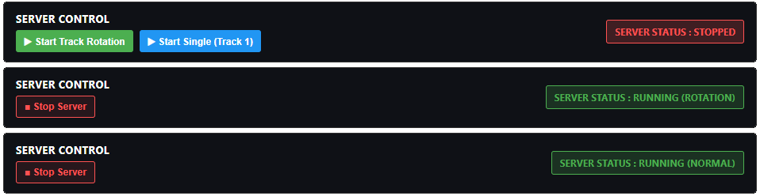
Global Settings - Overview
- Select & Configure.
- Expand Each Section to set the relevant settings.
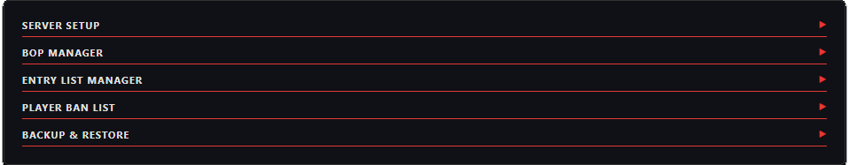
Server Setup
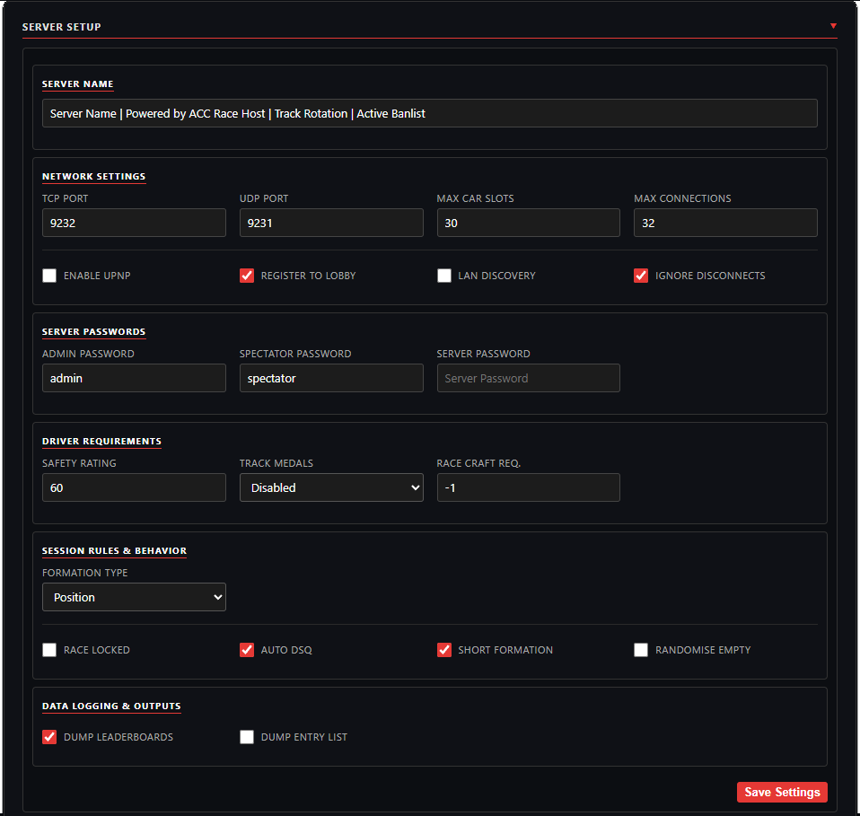
BOP Manager
- Import your bop.json using the import button.
- You can add, edit or remove entries using the editor provided.
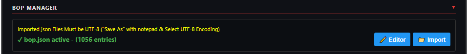
BOP Editor...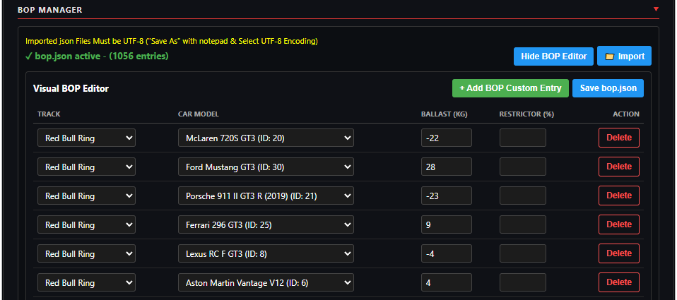
Entry List Manager
- Import your entrylist.json using the import button.
- You can add, edit or remove entries using the editor provided.
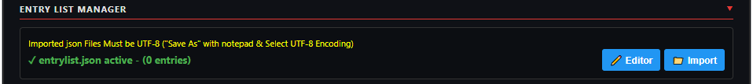
Entry List Editor...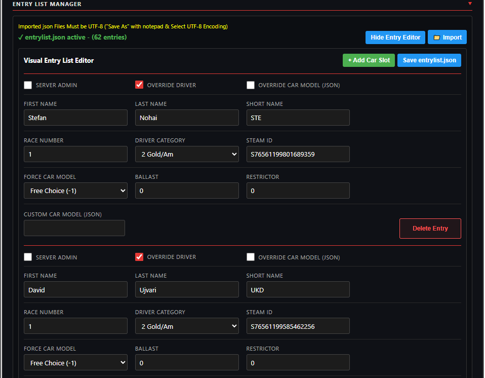
Player Ban List
- Enable or Disable the Player Ban List.
- Add Player Name and Steam ID to apply a Permanent Ban.
- Browse the lastest Result files to find Players.
- Use the /ban Admin Command ingame to Ban the Player from the session.
- View the Latest Session Results & Add the Player to Banlist.
- Or Manually Add the Player Name and Steam ID.
- When the Server Restarts The Player will be Banned.
How To Ban a Player(Permanent Ban applies until the Player is Removed from the Banlist.)
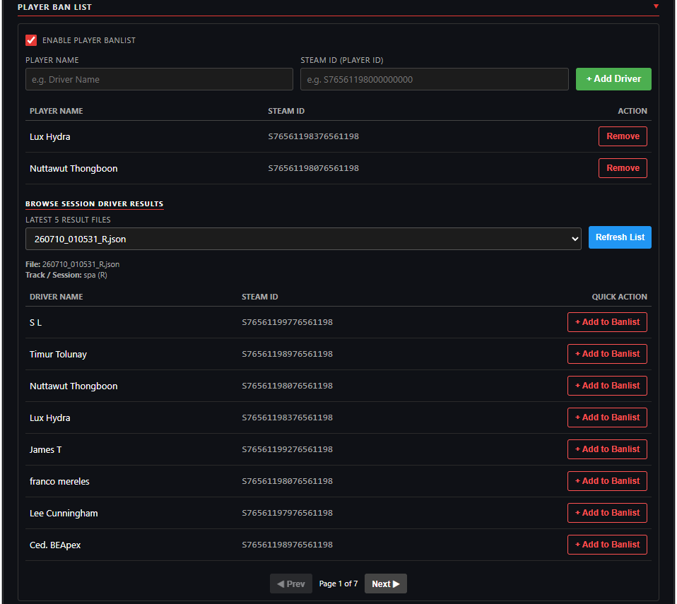
Backup & Restore
- Export or Import backups of the session mananger configuration settings.
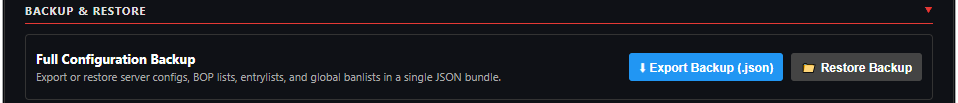
Live Track Rotation - Overview
- Select the Track and Car Class for the Session.
- Expand Each Section to set the relevant settings for each race.
- Re-Order or Delete Tracks in the Rotation List.
- Add Tracks to the List with the
[+ Add Track to Live Rotation]button below. - Live Queue - Add New Tracks while the server is Running to add them to the queue.
- Run Single Track - Start the server in normal operation mode using this track.
- Save Rotation after any changes!
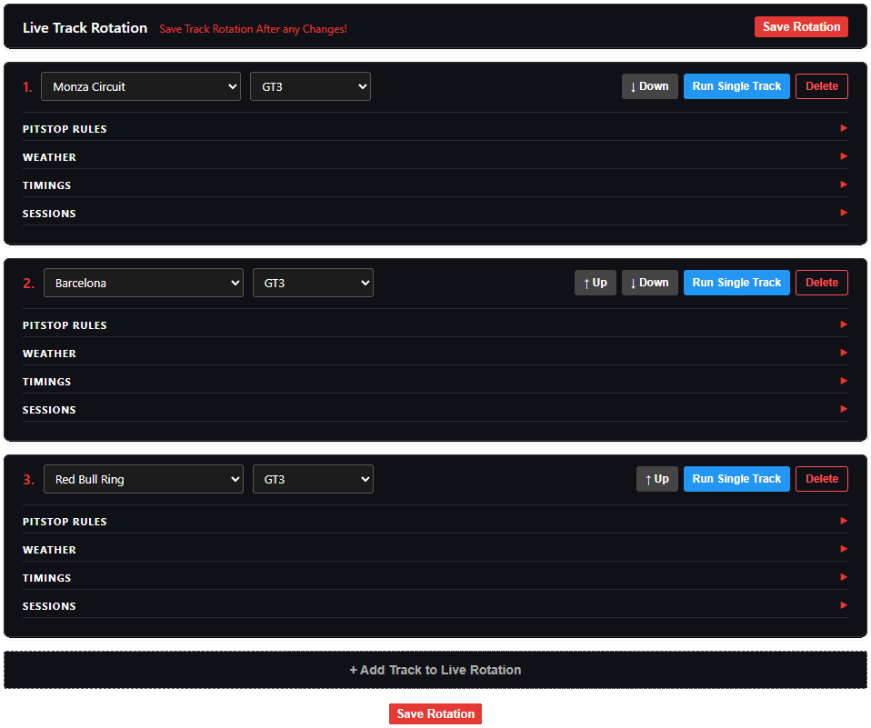
Sessions Expanded...
Pitstop Rules
- Configure the Required Pitstop Settings for the Session.
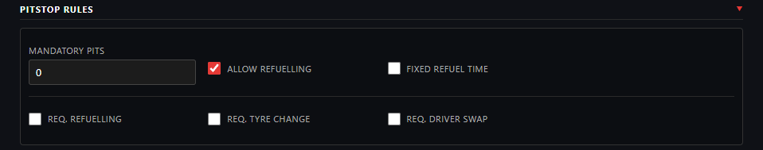
Weather
- Select a Custom or Default Preset.
- Or Use the Inputs to Set Custom Weather.
Custom Presets
- Use the Inputs to Set Your Weather.
- Press "Save Preset" and give it a name.
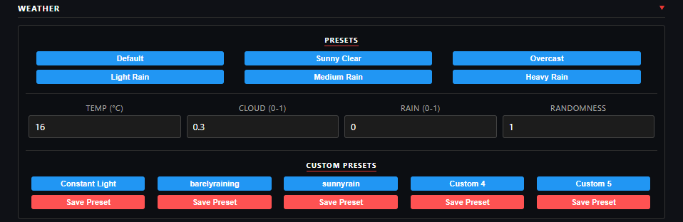
Timings
- Pre-Race Time (Grid Time) should be atleast 1:20 secs.
- Nordschleife will Require a High Overtime of 450 secs.
- 150 secs Overtime is default to Cover Spa Francorchamps.
- Keep Post Qualy and Post Race a low value (under 10 secs).
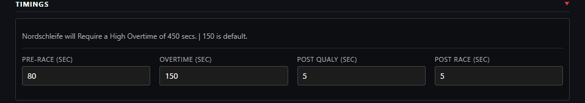
Sessions
- Define your Session Type, Weekend Day, Hour of Day, Duration & Time Muliplier.
- Use the + Add Session and Remove Buttons to add or remove Sessions.
- Save Rotation to commit the Session to the Queue.
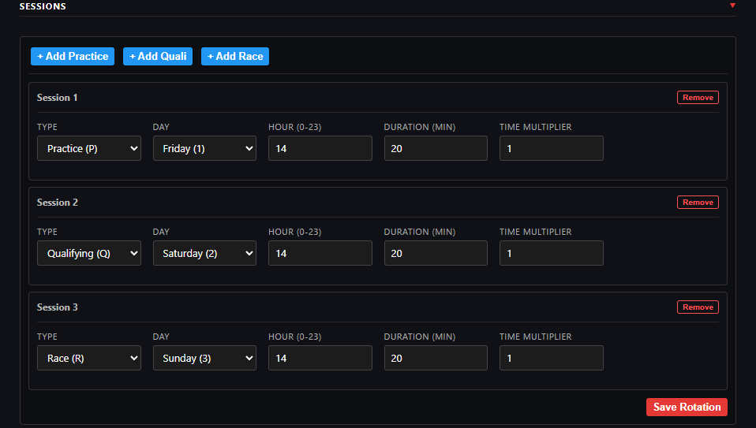